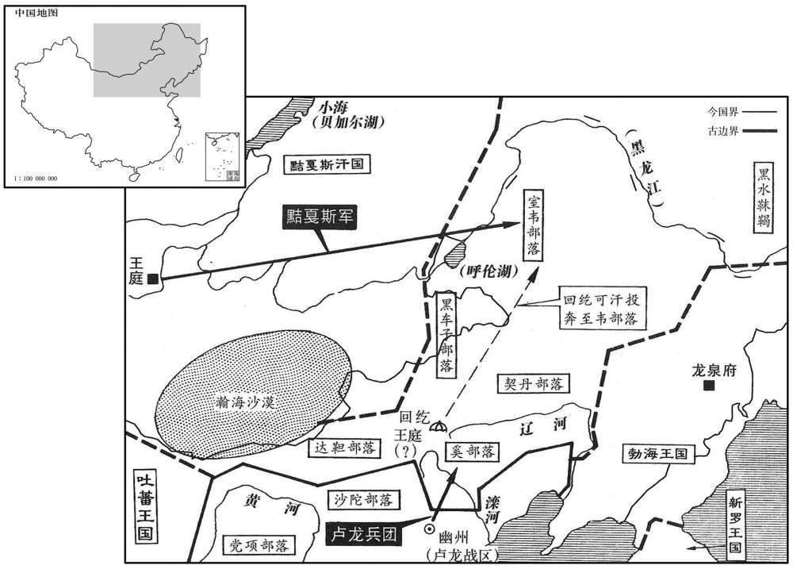
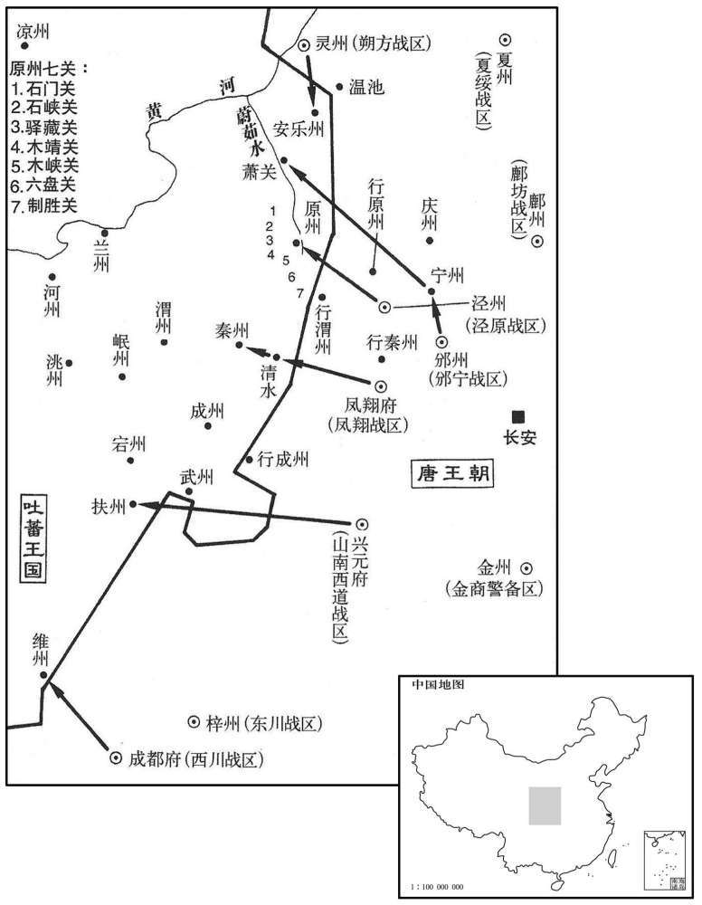

公元848年资治通鉴：本年记事、原文与白话对照
按原书编年位置阅读；追叙和史论不等于本年发生的事件。白话采用所据译本，缺译不以生成译文补齐。
卷248 · 本年记事
公元848年 · 唐宣宗元圣至明成武献文睿智章仁神聪懿道大孝皇帝大中二年
二年〔（戊辰、八四八）〕
上传原文的注释括号有异常，字符原样保留；无法可靠划分的段落默认全文显示。
本年事件索引（现代整理）
- 群臣为宣宗上尊号圣敬文思和武光孝皇帝并大赦天下
- 丁柔立为李德裕辩冤，因被指阿附而贬为南阳尉
- 李回、郑亚因未能替吴湘申冤而被贬，李绅被追夺三任告身
- 回鹘余部依附室韦，后被黠戛斯击败并带回漠北
- 宣宗任令狐绹为翰林学士，并命宰相编制百官名册供御览
- 宣宗立皇子李泽为濮王，并听从柴岳明不建五王院的劝告
- 本月发生日食
- 崔元式罢相，周墀、马植拜同平章事
- 韦澳劝周墀不要以个人爱憎行使赏罚刑罚
- 太皇太后郭氏在兴庆宫去世
- 宣宗因怀疑郭氏与宪宗之死有关而薄待她，郭氏登楼欲自尽后当晚去世
- 王皞主张郭太皇太后应合葬景陵并配享宪宗，忤旨被贬
- 宣宗将李德裕再贬为崖州司户，李回贬为贺州刺史
- 石雄向朝廷自陈平叛功劳求任一镇，未获重用后郁郁而终
- 宣宗为万寿公主择婿郑颢，并严令公主遵守臣庶礼法
- 懿安皇后葬于景陵之侧
- 韦琮罢相为太子宾客
- 崔珙奏报击败吐蕃并收复清水，清水暂隶凤翔
- 宣宗提拔宪宗朝公卿子孙，任杜胜为给事中并擢裴谂为翰林承旨
- 论恐热遣莽罗急藏侵边，尚婢婢派拓跋怀光击败并招降之
- 周墀称赞韦丹在江西的政绩，宣宗命杜牧撰碑并擢用韦丹之子

本年形势与背景参考图

本年形势与背景参考图
正月，甲子，群臣上尊号曰圣敬文思和武光孝皇帝；〔思，相吏翻。〕赦天下。
正月，甲子（初三），群臣给唐宣宗上尊号，称为圣敬文思和武光孝皇帝；唐宣宗为此大赦天下。
初，李德裕执政，有荐丁柔立清直可任谏官者，德裕不能用。上即位，柔立为右补阙；德裕贬潮州，柔立上疏讼其冤。丙寅，坐阿附贬南阳尉。〔史言丁柔立有是非之心。南阳县，汉南阳郡所治宛县地也，隋改为南阳县，唐属邓州。九域志：在州东北一百二十里。〕
起初，李德裕任宰相执朝政，有人推荐丁柔立为人清廉正直，可以担任谏官，李德裕不予任用。唐宣宗即皇帝位后，任丁柔立为右补阙；李德裕被贬至潮州，丁柔立向唐宣宗上疏为李德裕申冤。丙寅（初五），朝廷以丁柔立阿附李德裕而将他贬为南阳县尉。
西川节度使李回、桂管观察使郑亚坐前不能直吴湘冤，乙酉，回左迁湖南观察使，亚贬循州刺史，李绅追夺三任告身。〔李绅已薨，故追夺。〕中书舍人崔嘏坐草李德裕制不尽言其罪，己丑，贬端州刺史。
西川节度使李回、桂管观察使郑亚因为以前不能辨白吴湘的冤情，乙酉（二十四日），李回被降职调任湖南观察使，郑亚被贬为循州刺史，李绅虽死，也被追夺三任委任状。中书舍人崔嘏因为起草贬李德裕官的制书没有全部写上李德裕的罪状，已丑（二十八日），也被贬为端州刺史。
回鹘遏捻可汗仰给于奚王石舍朗；〔仰，牛向翻。〕及张仲武大破奚众，〔见去年五月。〕回鹘无所得食，日益耗散，至是，所存贵人以下不满五百人，依于室韦。使者入贺正，〔此回鹘使者也。〕过幽州，张仲武使归取遏捻等；遏捻闻之，夜与妻葛禄、子特勒毒斯等九骑西走，余众追之不及，相与大哭。室韦分回鹘余众为七，七姓共分之；〔室韦有岭西部、山北部、黄头部、如者部、婆莴部、讷北部、骆丹部，凡七姓，悉居柳城东北，近者二千里，远者六千里而赢。〕居三日，黠戛斯遣其相阿播帅诸胡兵号七万来取回鹘，〔帅，读曰率。〕大破室韦，悉收回鹘余众归碛北。犹有数帐，潜窜山林，钞盗诸胡；〔钞，楚交翻。〕其别部厖勒，先在安西，亦自称可汗，居甘州，总碛西诸城，种落微弱，时入献见。〔见，贤遍翻。回鹘至五季时入献见者皆厖勒种类也。种，章勇翻。〕
回鹘国的遏捻可汗因穷困，生活仰仗于奚族王石舍朗。至唐卢龙节度使张仲武大破奚族部众，回鹘没有地方可求得食物，于是部众日益消耗离散，到这时，所留下的贵族以下人员还不满五百人，转而依附于室韦部族。回鹘派遣使者入唐朝祝贺正旦佳日，路过幽州，张仲武让其使者回去擒取遏捻可汗等人；遏捻可汗得知消息，趁夜与妻子葛禄、儿子特勒毒斯等九人骑马西走，回鹘余众追遏捻可汗不及，相对痛哭流泪。于是室韦将回鹘余众分为七个部分，由室韦族的七姓部落平分，每姓分得一部；留居了三天，黠戛斯派遣宰相阿播率领诸胡族之兵号称七万来夺取回鹘人，大破室韦部族，将回鹘余众全部收归沙漠之北。还有几帐回鹘人，秘密地逃窜到山林之中，经常出来攻掠劫取诸胡部落；回鹘族的别部勒，起先在安西，也自称可汗，居住于甘州，总领沙漠以西诸城镇，这时回鹘部落已很微弱，时常入唐朝贡献，朝见大唐皇帝。
二月，庚子，以知制诰令狐绹为翰林学士。上尝以太宗所撰金镜〔金镜书，太宗所著也。〕授绹，使读之，「至乱未尝不任不肖，至治未尝不任忠贤，」〔治，直吏翻。〕上止之曰：「凡求致太平，当以此言为首。」又书贞观政要于屏风，每正色拱手而读之。〔观，古玩翻。〕上欲知百官名数，令狐绹曰：「六品已下，官卑数多，皆吏部注拟；五品以上，则政府制授，各有籍，命曰具员。」上命宰相作具员御览五卷，上之，〔上之，时掌翻。〕常置于案上。
二月，庚子（初十），唐宣宗任知制诰令狐为翰林学士。唐宣宗曾经以唐太宗所撰写的《金镜》授与令狐，让他读给自己听，书中有“在大乱之世也不应该委任不肖之徒为官，在大治之世也不应该不委忠贤之士掌政，”唐宣宗听到这句时止住令狐，说：“凡是要求致太平的，应当以这句话为首要信条。”又将《贞观政要》书写于屏风之上，经常严肃地拱手细读其中的警句。唐宣宗想知道朝廷百官的名字和数额，令狐说：“六品以下的官，官位卑下而数目很多，都由尚书省吏部注拟授职；五品以上的官，则由中书门下政事党节制授理，他们各有名籍，叫做具员。”唐宣宗于是命令宰相撰写《具员御览》五卷，宰相撰修完后奏上，唐宣宗将其经常放置于桌上，以备查考。
立皇子泽为濮王。上欲作五王院于大明宫，以处皇子之幼者，〔处，昌吕翻。〕召术士柴岳明使相其地。岳明对曰：「臣庶之家，迁徙不常，故有自阳宅入阴宅，阴宅入阳宅。刑克祸福，师有其说，〔阴阳家所谓三刑，谓寅刑巳，巳刑申，申刑寅，丑刑戌，戌刑未，未刑丑，子刑卯，卯刑子，辰刑辰，午刑午，酉刑酉，亥刑亥。克，谓金克木，木克土，土克水，水克火，火克金。〕今陛下深拱法宫，〔如淳曰：法宫，路寝正殿也。〕万神拥卫，阴阳书本不言帝王家。」上善其言，赐束帛遣之。
唐宣宗立皇子李泽为濮王。唐宣宗想在大明宫内建造五王院，以让年龄幼小的皇子居处，召来术士柴岳明，让他来相风水。柴岳明回答说：“一般臣民之家，常迁徒不定，所以有的从向阳的屋子迁入朝阴的屋子，有的从朝阴的屋子迁进向阳的屋子。阴阳家所谓三刑祸福，五行相克，是有这种说法，但陛下您高筑起宏伟的路寝正殿，受到万神的拥戴守卫，而阴阳家的书是无法预测帝王之家的。”唐宣宗对柴岳明的话表示赞同，赐给他束帛将他送走。
夏，五月，己未朔，日有食之。
夏季，五月，己未朔（初一），出现日食。
门下侍郎、同平章事崔元式罢为户部尚书；以兵部侍郎．判度支．户部周墀、刑部侍郎．盐铁转军使马植并同平章事。〔「并」，当作「并」〕
唐宣宗将门下侍郎、同平章事崔元式罢相，任为户部尚书；任命兵部侍郎、判度支、户部周墀和刑部侍郎，盐铁转运使马植一并为同平章事。
初，墀为义成节度使，辟韦澳为判官，及为相，谓澳曰：「力小任重，何以相助﹖」澳曰：「愿相公无权。」墀愕然，不知所谓。澳曰：「官赏刑罚，与天下共其可否，勿以己之爱憎喜怒移之，天下自理，何权之有！」墀深然之。澳，贯之之子也。〔澳，乌到翻。韦贯之，元和中为相。〕
起初，周墀为义成节度使，召聘韦澳为判官，及为宰相，周墀对韦澳说：“我的能力很小，而任务很重，你将如何帮助我呢？”韦澳回答说：“希望相公没有权力。”周墀听后感到愕然，不知道韦澳指的是什么意思。韦澳解释说：“对于官的赏赐和用刑处罚，您应该与天下人持相同的意见，不要以自己的爱憎喜怒来转移公论，这样天下就自然得到治理，又有什么必要去谋求权力！”周墀听后深表赞同。韦澳是韦贯之的儿子。
己卯，太皇太后郭氏崩于兴庆宫。
已卯（二十一日），太皇太后郭氏于兴庆宫驾崩。
六月，礼院检讨官王皞贬句容令。〔唐太常寺有礼院修撰、检讨官各一员。宋白曰：贞元九年四月，敕太常寺宜署礼院修撰、检讨官各一员，使为定额。句容县，属升州。宋白曰：句容县，本汉县，以界内茅山本名句曲山，因立名。〕
六月，礼院的检讨官王被贬为句容县令。
初，宪宗之崩，上疑郭太后预其谋；又，郑太后本郭太后侍儿，有宿怨，故上即位，待郭太后礼殊薄。郭太后意怏怏，一日，登勤政楼，〔即玄宗所起勤政务本之楼，在兴庆宫。〕欲自陨；上闻之，大怒，是夕，崩，外人颇有异论。
起初，唐宪宗崩驾，唐宣宗怀疑郭太后参预了谋害唐宪宗的密谋；另外，郑太后本是侍侯郭太后的小婢，她们之间有宿怨，因此，唐宣宗即皇帝位后，对待郭太后的礼遇特别薄。郭太后为此怏怏不得意。有一天，郭太后登上兴庆宫的勤政楼，企图跳楼自杀；唐宣宗得知情状，勃然大怒，这天夜里，郭太后身死，宫禁外人们对此有不少异议。
上以郑太后故，不欲以郭后祔宪宗，有司请葬景陵外园；皞奏宜合葬景陵，神主配宪宗室，奏入，上大怒。白敏中召皞诘之，皞曰：「太皇太后，汾阳王之孙，〔郭子仪封汾阳王。〕宪宗在东宫为正妃，逮事顺宗为妇。宪宗厌代之夕，事出暧昧；太皇太后母天下，历五朝，〔五朝，穆、敬、文、武、宣。〕岂得以暧昧之事遽废正嫡之礼乎！」敏中怒甚，皞辞气愈厉。诸相会食，周墀立于敏中之门以俟之，敏中使谢曰：「方为一书生所苦，公弟先行。」〔弟，与第同。〕墀入，至敏中厅问其事，见皞争辨方急，墀举手加颡，叹皞孤直。明日，皞坐贬官。〔考异曰：实录：「五月，戈寅，以太皇太后寝疾，权不听政，宰臣帅百寮问太后起居。己卯，复问起居，下遗令。是日，太后崩。初，上纂位，以宪宗遇弒，颇疑后在党中，至是，暴得疾崩，帝之志也。甲申，白敏中帅百寮上表请听政，不许。乙酉，又上表，不许。丙戌，三上表，乃依。六月，贬礼院检讨官王皞为润州句容令。」旧传曰：「宣宗继统，即后之诸子也，恩礼愈异于前朝。大中年崩，祔景陵。后历位七朝，五居太母之尊，人君行子孙之礼，福寿隆贵四十余年，虽汉之马、邓无以加焉，识者以为汾阳社稷之功未泯，复锺庆于懿安焉。」裴延裕东观奏记曰：「宪宗皇帝晏驾之夕，上虽幼，颇记其事，追恨光陵商臣之酷，即位后，诛鉏恶党，无漏网者。郭太后以上英察孝果，且怀惭惧，时居兴庆宫，一日，与一二侍儿同升勤政楼，倚衡而望，便欲殒于楼下，欲成上过；左右急持之，即闻于上。上大怒，其夕，太后暴崩，上志也。」又曰：「懿安郭太后既崩，丧服许如故事。礼院检讨官王皞抗疏，请后合葬景陵，配飨宪宗庙室。既入，上大怒。宰臣白敏中召皞诘其事。皞对云云。翌日，皞贬润州句容县令；周墀亦免相。」按实录所言暴崩事，皆出于东观奏记。若实有此事，则既云是夕暴崩，何得前一日先下诏云，以太后寝疾，权不听政。若无此事，则廷裕岂敢辄诬宣宗！或者郭后实以病终，而宣宗以平日疑忿之心，欲黜其礼，故皞争之。疑以传疑，今参取之。东观奏记又曰：「杜悰通贵日久，门下有术士姓李。悰任西川节度使，马植罢黔中赴阙，至西川，李术士一见植，谓悰曰：『马中丞非常人也，相公厚遇之。』悰未之信。术士一日密言于悰曰：『相公将有甚祸，非马中亟不能救，乞厚结之。』悰始惊信。发日，厚币赠之，仍令邸吏为植于阙下买宅，生生之费无阙焉。植至门，方知感，悰，不知其旨。寻除光禄卿，报状至蜀，悰谓术士曰：『贵人到阙作光禄勋矣。』术士曰：『姑待之。』稍进大理卿，又迁刑部侍郎，充诸道盐铁使。悰始惊忧。俄而作相。懿安皇太后崩后，悰，懿安子伲也，忽一日，内榜子索检责宰相元载故事。植谕旨。翌日延英，上前万端营救。植素辩，能回上旨，事遂中寝。按植，会昌中已自黔中入为大理卿。悰今年二月始为西川节度。今不取。按裴延裕后作「廷裕」，必有一误。〕
唐宣宗因为郑太后的缘故，不希望让郭太后于唐宪宗的墓中安葬，主管丧礼的官府请求将郭太后埋葬于景陵的外园；王向唐宣宗上奏论说应该与唐宪宗同葬于景陵，郭太后的神主像也应该和唐宪宗的神主像配置于同一室，王
的奏状入于朝廷，唐宣宗勃然大怒。白敏中召来王质问并指责他，王说：“太皇太后，是汾阳王郭子仪的孙女，宪宗在东宫时就是正妃娘娘，成为顺宗的媳妇。宪宗驾崩的那天夜里，似乎死得有些不明不白；但太皇太后郭氏为天下之母，已经历了穆、敬、文、武及今朝共五朝，岂可以因为不明不白的事就突然废止按正宫嫡妻安葬的礼仪呢？”白敏中听完后怒气冲天，而王却越说越有劲，语气更加严厉。待到宰相于政事堂会餐，周墀站在白敏中的公堂门口等待，白敏中派人向周墀道谢说：“刚才正为一个书生所困扰，您请先走一步。”周墀于是进入白敏中的公堂，问事出何由，只见王正争辩得厉害，周墀不由得举手按住脑门，赞叹王为人正直。第二天，王即因此而被贬官。
秋，九月，甲子，再贬潮州司马李德裕为崖州司户，湖南观察使李回为贺州刺史。〔崖州去京师七千四百六十里。贺州，京师东南四千百百三十里。〕
秋季，九月，甲子（八日），唐宣宗再次将潮州司马李德裕贬为崖州司户，将湖南观察使李回贬为贺州刺史。
前凤翔节度使石雄诣政府自陈黑山、乌岭之功，〔政府，即谓政事堂。黑山、乌岭功并见上卷武宗会昌三年。考异曰：此出范摅云溪友议。彼以乌岭为天井，误也。〕求一镇以终老。执政以雄李德裕所荐曰：「向日之功，朝廷以蒲、孟、岐三镇酬之，足矣。」〔蒲，河中。孟，河阳。岐，凤翔。〕除左龙武统军。雄怏怏而薨。
前凤翔节度使石雄来到中书门下政事堂，向宰相们陈述自己在黑山、乌岭建立的功劳，请求领一藩镇任节度使，直至终老。当朝执政的宰相认为石雄是李德裕所推荐，对石雄说：“以前的战功，朝廷已经让你统辖蒲州、孟州岐州三镇，算是给你的酬劳，够可以的了。”于是任石雄为左龙武统军，石雄怏怏不乐而死。
十一月，庚午，万寿公主适起居郎郑颢。颢，絪之孙，〔郑絪为相于元和之初。〕登进士第，为校书郎、右拾遗内供奉，以文雅著称。公主，上之爱女，故选颢尚之。有司循旧制请用银装车，上曰：「吾欲以俭约化天下，当自亲者始。」令依外命妇以铜装车。〔唐制：公主乘厌翟车。外命妇一品，乘自铜厌犊车。〕诏公主执妇礼，皆如臣庶之法，戒以毋得轻夫族，毋得预时事。又申以手诏曰：「苟违吾戒，必有太平、安乐之祸。」〔乐，音洛。〕颢弟顗，尝得危疾，上遣使视之，还，问「公主何在﹖」曰：「在慈恩寺观戏场。」上怒，叹曰：「我怪士大夫家不欲与我家为婚，良有以也！」亟命召公主入宫，立之阶下，不之视。公主惧，涕泣谢罪。上责之曰：「岂有小郎病，不往省视，乃观戏乎！」〔自晋以来，嫂谓叔为小郎。省，悉景翻。〕遣归郑氏。由是终上之世，贵戚皆兢兢守礼法，如山东衣冠之族。
十一月，庚午（十四日），万寿公主嫁起居郎郑颢。郑颢是郑的孙子，举进士第，任校书郎、右拾遗内供奉，以文才风度儒雅而著称于士林。而万寿公主是唐宣宗的爱女，所以宣宗选郑颢娶公主。有关礼官请遵循旧制度用银子装饰马车，唐宣宗说：“我正想以俭朴节约来教化天下人，应当从我的亲人开始。”于是命令礼官依照一品外命妇的标准用铜装饰车辆。唐宣宗又颁下诏书令万寿公主要执守妇人的礼节，不能因为自己是皇帝的女儿而失礼不守规矩，一切规矩都依照臣下庶民的习惯法律，并告诫万寿公主不得轻视丈夫家族的人，不得干预时事。唐宣宗自写诏书告诫万寿公主说：“如果违背我给你的告诫，必然会有当年太平公主、安乐公主那样的祸患。”郑颢之弟郑，曾患有重病，十分危急，唐宣宗派遣使者去探视，回宫后，唐宣宗问道：“万寿公主在什么地方”使者回答说：“在慈恩寺观戏场。”唐宣宗听后勃然大怒，叹惜说：“我一直奇怪士大夫家族不想与我家结婚，现在看来是有原因的！”立即命令召万寿公主入禁宫，让她站立在庭殿台阶之下，看也不看她一眼。万寿公主感到恐慌，流泪满面，向父皇谢罪。唐宣宗责备女儿说：“哪有小叔子病危，嫂子不去探望，反而有兴致去看戏的道理！”派人将万寿公主送回郑颢家。于是直到唐宣宗死，终其朝，皇亲遗戚都兢兢尊守礼法，不敢有违逆，象崤山以东以礼法门风相尚的世族一样。
壬午，葬懿安皇后于景陵之侧。〔非礼也。宪宗不为正其始，以致宣宗不为正其终。〕
壬午（二十六日），将懿安皇后安葬于景陵旁侧。
以中书侍郎、同平章事韦琮为太子宾客、公司。
唐宣宗将中书侍郎、同平章事韦琮罢相，改任太子宾客、分司东都。
十二月，凤翔节度使崔珙奏破吐蕃，克清水。清水先隶奏州，宋白曰：「清水，汉旧县，其地即秦仲始所封。九域志：清水县在秦州九十里。宋白曰：长兴中，移清水县于上邽镇。九域志之清水，长兴所移也。〕诏以本州岛未复，权隶凤翔。
本段缺少可靠对应白话，原文完整保留；未使用生成译文。
上见宪宗朝公卿子孙，多擢用之。刑部员外郎杜胜次对，上问其家世，对曰：「臣父黄裳，首请宪宗监国。」〔事见二百三十六卷永贞元年。朝，直遥翻。〕即除给事中。翰林学士裴谂，度之子也，上幸翰林，面除承旨。〔谂，式荏翻。以裴度相元和之功，自足以赏延于也，但翰林学士承旨非赏功之官耳。〕
唐宣宗凡是看到宪宗朝公卿大臣的子孙，多半要提拔选用。刑部员外郎杜胜上朝参加次对，唐宣宗问到他的家世，杜胜回答说：“我父亲杜黄裳，首先提议请宪宗监国。”唐宣宗立即任命杜胜为给事中。翰林学士裴谂，是裴度的儿子，唐宣宗来到翰林院，当面提升裴谂为翰林学士承旨。
吐蕃论恐热遣其将莽罗急藏将兵二万略地西鄙，尚婢婢遣其将拓跋怀光击之于南谷，大破之，急藏降。〔降，户江翻。〕
吐蕃首领论恐热派遣部将莽罗急藏率兵二万人攻略西部边境之地，尚婢婢派遣部将拓跋怀光抗击论恐热于南谷，结果大破论恐热军。莽罗急藏投降尚婢婢。
译本中未与胡注本可靠对应的内容
以下另列供核对版本差异，不并入胡注本正文。
译本所附古文
[15]十二月，凤翔节度使崔珙奏破吐蕃，克清水。清水先隶秦州，诏以本州未复，权隶凤翔。
译本白话
十二月，凤翔节度使崔珙上奏朝廷，称击破吐蕃，攻克清水县，清水县起先隶属于秦州，唐宣宗颁下诏书称，由于秦州尚未收复，清水县暂时隶属于凤翔。